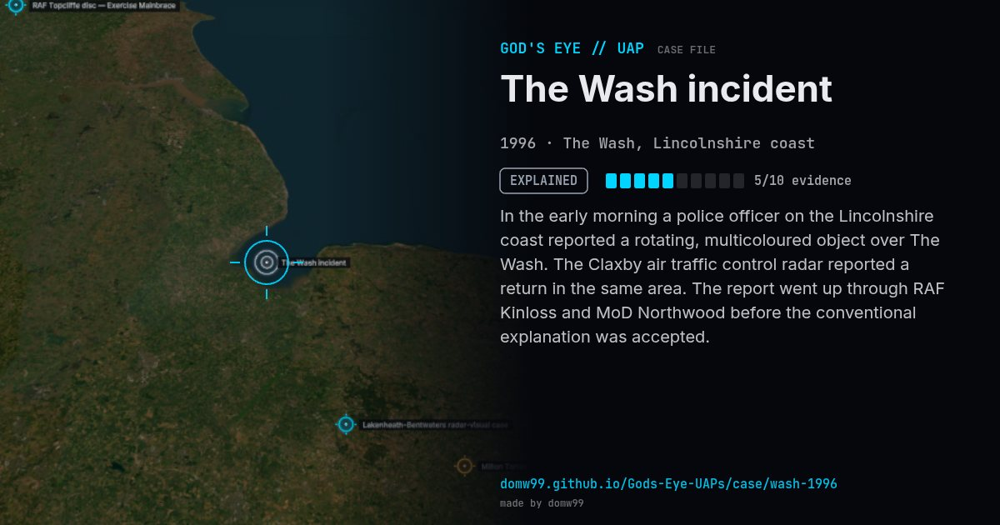

The Wash incident
EXPLAINED

In the early morning a police officer on the Lincolnshire coast reported a rotating, multicoloured object over The Wash. The Claxby air traffic control radar reported a return in the same area. The report went up through RAF Kinloss and MoD Northwood before the conventional explanation was accepted.
Explanation
The radar returns were at least partly explained as echoes from St Botolph's Church ("the Boston Stump"), and the visual sightings as stars and planets.
What was seen
Shape: Rotating, multicoloured light
Witnesses: Police officer David Leyland; other witnesses
Duration: Hours